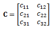

Matrix Multiplication
Matrices are often used to solve systems of equations. In order to do this matrices must be multiplied. In order to multiply two matrices (A x B), the number of columns in A must be equal to the number of rows in B. The result of matrix multiplication is another matrix where the resulting matrix will have the same number of rows as A and the same number of columns as B.
Matrix A multiplied by matrix B equals matrix C
Use the rows from the first vector and the columns from the second.
In order to multiply two matrices (such as A x B shown above) you will use the rows from A and the columns from B. We first find that C will be a 4x3 matrix since A has 4 rows and B has 3 columns. The element in each location of C will be the dot product of the corresponding row of A and the corresponding column of B.
For example:
Examples of calculated elements.
Worked Problems
Worked Problem 1:
Find C.
| Work | Comments |
|
We first check to make sure that the number of columns in A matches the number of rows in B. It does so these matrices can be multiplied. |
|
|  |
Next, we determine that C is a 3x2 matrix because A has 3 rows and B has 2 columns. |
|
We can then solve for each of the six elements in C by calculating the dot product of the corresponding row from A and the corresponding column from B. |
|
|
We then put these values back into matrix form for the answer. |
 |
| Author: Jacob Moore has liscenced this work under a Creative Commons Attribution-NonCommercial 3.0 Unported License. |